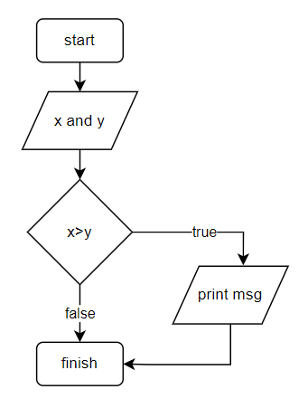
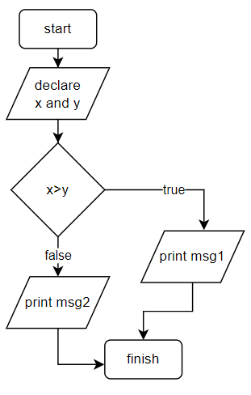
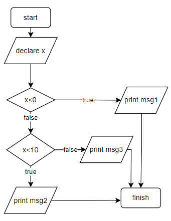
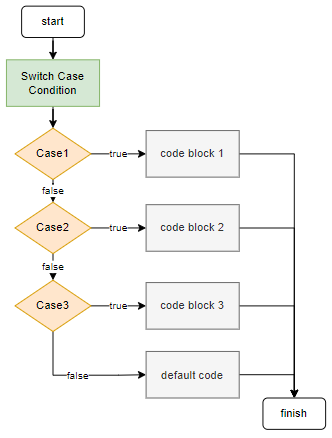
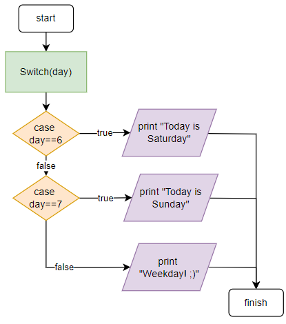

Workshop 2 - If-else, While, and Flowcharts¶
if statement¶
int x = 10;
int y = 20;
if (x > y) {
printf("x is greater than y"); // msg
}

if-else statement¶
int x = 10;
int y = 20;
if (x > y) {
printf("x is greater than y"); //msg1
}
else
{
printf("x is greater than y"); //msg2
}

if-else-if statement¶
int x = 10;
if (x < 0) {
printf("x is less than 0"); // message 1
}
else if (x<10)
{
printf("x is greater than or equal to 0 and less than 10"); // message 2
}
else
{
printf("x is greater than or equal to 10"); // message 3
}

The switch statement¶
Instead of using many if..else statements, one can use the switch statement. The switch statement selects one of the code blocks to be executed according to an specific condition/expression:
switch (condition_or_expression) {
case Case1:
// code block 1
break;
case Case2:
// code block 2
break;
case Case3:
// code block 3
break;
default:
// default code
}

Example: Switch statement¶
int day = 3;
switch (day) {
case 6:
printf("Today is Saturday");
break;
case 7:
printf("Today is Sunday");
break;
default:
printf("Weekday! ;)");
}

- Obs.:
breakexits the switch. If the command is omitted, the execution falls through into the next case. For more details refer to w3schools.
While¶
Example
char country[] = "Netherlands";
int i = 0;
void setup() {
// put your setup code here, to run once:
Serial.begin(115200);
while(i<11){
Serial.printf("%c", country[i]);
Serial.println(country[i]);
i++; // variable = variable+1; variable++;
}
}
void loop() {
}
Next Tutorial¶
Go to Workshop 3 - Variables, Data types, If and Loops.